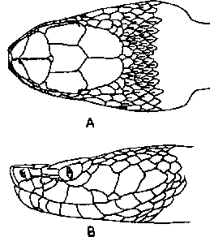

|
Digitized Inventory of Animal Resources: Reptilia ( Snakes ) Principal Investigator: Dr. R. J. B Alfred, Co-Investigator: Dr. Rama Krishna, Contributed by:
Dr. R.C.Sharma |
Agkistrodon himalayanus (Gunther 1864)
Taxonomic
Details
----- Scientific Name
----- Classification
----- Synonyms
----- Common Names
Other
Biological Details
----- Habit and
Habitat
----- Distribution
---------- Extent of
Occurrence
---------- Area of occurrence
---------- Altitude
---------- Population
-----
Conservation Status
-----
Diagnostic
Features
-----
Breeding system
Miscellaneous
Information
Literature
Genus : Agkistrodon Beauvois 1799.
Head distinct from the neck, with large symmetrical shields, those on the snout occasionally broken up into small scales. Nostril lateral. Eye with vertically elliptical pupil. Loreal pit present, between eye and the nostril, the loreal shield forming its anterior wall. Anal entire. Tail without rattle on its end. The genus is distributed in central and south-eastern Asia; the eastern and central United States, and middle America.
Scientific Name : Agkistrodon himalayanus (Gunther 1864)
Family :
Viperidae
Classification:
Genus : Agkistrodon Beauvois 1799.
Synonyms:
Common Names: Himalayan
Pit Viper
HABIT & HABITAT The most favourate habitat of this viper is hilly terrain between 7000-10000 feet altitude. In Kashmir it has been noticed most comfortable at an of 12000 feet even; a specimen was captured at the feet of the Dharmsala Glacier, W. Himalayas, at an altitude of 16000 feet. The snake is most timid and docile, even on provocation never makes an attempt to bite. According to Wall it gives birth to 5-7 young at a time. altitude
Distribution: The western Himalays from Chitral (Pakistan) to Sikkim; Kashmir; Eastern Himalayas; Assam (Khasi Hills).
Conservation status: Fairly Common in western range
Length : The maximum length of the snake in males reaches up to 600 mm., tail 95 mm. and in females 600 mm., tail 80 mm. The maximum recorded length is 864 mm. by Stoliczka.
Body : Snout is not pointed. Hemipenis extends up to the 6th to 10th caudal plate, forked opposite 3rd-6th caudal plates; the extreme tip is calyculate, the remaining part of the organ is with spines which are small at the distal end but very large and fewer at the bifurcation; some of the spines extend beyond the fork; sulcus lips are most prominent.
Scales : Body scales are strongly keeled, in 21-23 rows at the mid-body; ventrals 147-175; subcaudals 32-52, divided.
Colouration : The dorsal colour is brown, with dark-brown or black spots or wavy cross-bars (sometimes quite faint); these spots in certain snakes confluent to form a festoon on each side of the vertebral line; the interspaces between the cross-bars sometimes whitish; a dark temporal stripe from the eye to the angle of the mouth which in individuals extends up to neck; upper lip is light-brown with dark spots; ventrum is brown, uniform or speckled with black and white.
Breeding Biology : According to Wall it gives birth to 5-7 young at a time. altitude

Agkistrodon
himalayanus (Gunther) : Head : A. Dorsal view
B. Lateral view